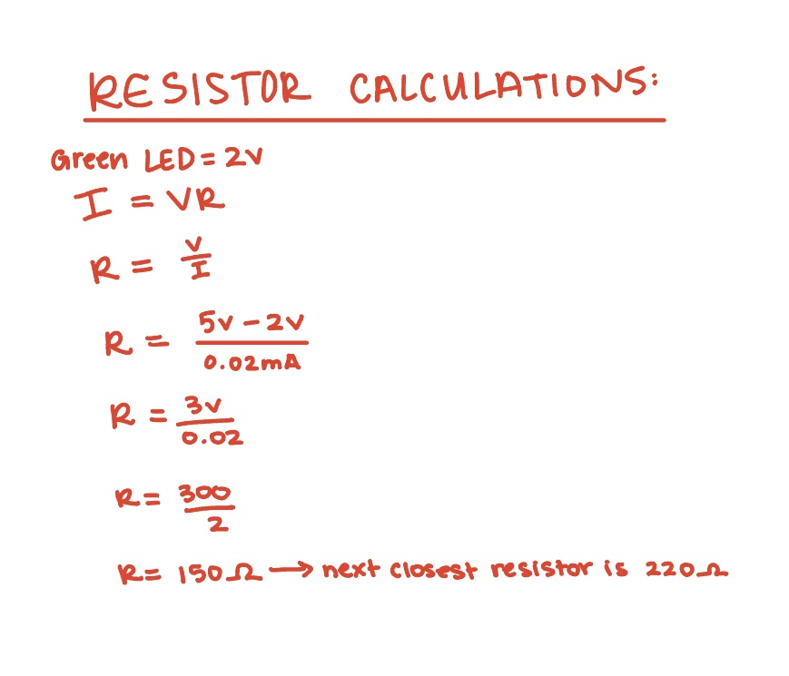

Calculations:

I used the equation V=IR rearranged to R=V/I to find the resistor needed
for the red LED. Voltage input is 5V from the source, and the voltage drop
is 2V for the red led, leaving us with 3V over 20mA. I got 150 ohms from my
calculations, but was told to round to 220 ohms in class for safety. The
joystick does not need a resistor.
Schematic:

I created these schematics using icons learned in class. The power source
is 5V for both the led and the joystick. The resistor for the LED should be
220 ohms based on my calculations and revisions that were told in class. The
joystick is connected to ground on the first pin, 5v on the second pin, and
analog on the 3rd (xVal) and 4th (yVal) pins.
Arduino Code Snippet:
const int xAxis = A1; // the x-axis on the joystick connects to pin A1
const int yAxis = A0; // the y-axis on the joystick connects to pin A0
const int LED = 11; // the led connects to pin 11
// setup
void setup() {
// begin the serial port
Serial.begin(9600);
// establish the led int as an output
pinMode(LED, OUTPUT);
}
// loop
void loop() {
// Read joystick X value and assign it to an integer
int xVal = analogRead(xAxis);
// Read joystickY value and assign it to an integer
int yVal = analogRead(yAxis);
// Send data to p5.js: "xVal,yVal"
Serial.print(xVal); // print xVal
Serial.print(","); // print ","
Serial.println(yVal); // print yVal and make a new line
// Check for input from p5.js
// if theres a byte of data in the serial port...
if (Serial.available() > 0) {
// create ledState character from the value in the serial port
char ledState = Serial.read();
// if the character is 1 turn the led on
if (ledState == '1') digitalWrite(LED, HIGH);
// otherwise, if the character is 0 turn the led off
else if (ledState == '0') digitalWrite(LED, LOW);
}
// delay to make loop flow smooth
delay(20);
}
JavaScript Code Snippet:
const BAUD_RATE = 9600; // This should match the baud rate in your Arduino sketch
let serial; // placeholder variable that will later hold the WebSerial object
let portButton; // placeholder variable to store the "Connect" button
let xPos = 200, yPos = 200; // starting coordinates for the watering can (center of canvas)
let growLampOn = false; // make a boolean growlampOn that starts as false (light is off)
//setup
function setup() {
createCanvas(400, 400); // create the canvas size of the game
// setup WebSerial
serial = createSerial();
// make a button on the screen that says connect to arduino
portButton = createButton('Connect Arduino');
// button position on canvas
portButton.position(10, 10);
// in the case that the mouse is pressed on the button, run the connectPort function
portButton.mousePressed(connectPort);
}
//draw
function draw() {
// if the growLampOn variable is true...
if (growLampOn == true) {
background('orange'); // if the lamp is on, make the screen orange
// otherwise...
} else {
background('white'); // if the lamp is off, make the screen white
}
// if there is data to receive from Arduino...
if (serial.available() > 0) {
// the variable "data" is added onto from the string in the serial
// until it hits a new line
let data = serial.readUntil('\n');
//prints the data to F12 console for debugging
console.log(data);
// if data has a value
if (data) {
// takes the string in data and chops it apart based on where the "," is in the
// string and puts the values into an array
let sensors = split(data, ',');
// if the array has 2 values (x and y values)...
if (sensors.length == 2) {
// Map joystick (0-1023) to canvas size
xPos = map(sensors[0], 0, 1023, 0, width); // x value
yPos = map(sensors[1], 0, 1023, height, 0); // y value
}
}
}
// draw a watering can controlled by Arduino joystick
fill('brown'); // fill the shape with brown
rect(xPos, yPos, 40, 30, 5); // draw rectangle for base of watering can
// and place it at xPos and yPos that we calculated in the draw function
rect(xPos + 38, yPos, 15, 5); // draw rectangle for spout of watering can
// and place it at xPos and yPos that we calculated in the draw function
// write instructions for the game
fill(0); // fill text with black
text("Use the joystick to move the watering can", 20, 50); // write text at location 20,50
text("Click the mouse to toggle the LED", 20, 70); // write text at location 20,70
}
// send to Arduino
function mousePressed() {
// toggle growLampOn boolean to the opposite of what it currently is
growLampOn = !growLampOn;
// if growLampOn is true
if (growLampOn) {
// serial write the value 1
serial.write('1');
// otherwise...
} else {
//serial write the value 0
serial.write('0');
}
}
// connect the computer to the arduino
function connectPort() {
// if serial is not already connected
if (!serial.opened()) {
serial.open(9600); // pick Arduino
portButton.hide(); // removes connect button once arduino is connected
}
}